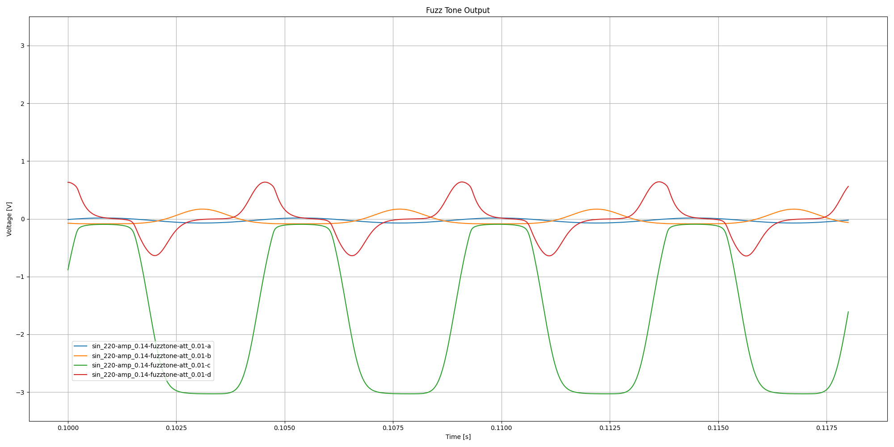
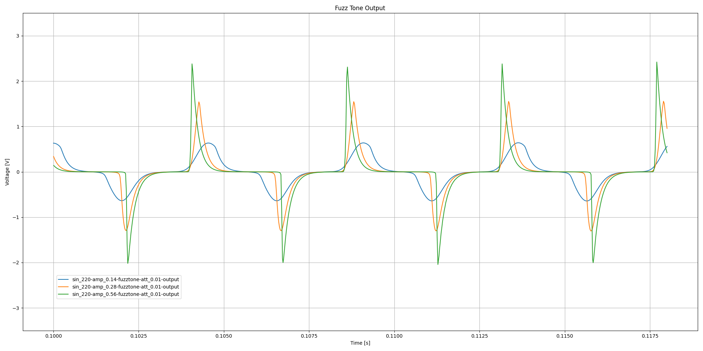
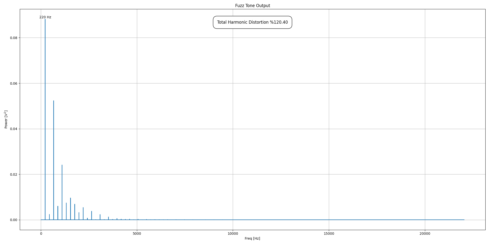

Transistor-level simulation of Glen Snoddy's US Patent #3,213,181 fuzz circuit, released by Gibson in 1962 as the Maestro Fuzz Tone FZ-1.
Repository: https://github.com/grwhitehead/us3213181
Glen Snoddy's US Patent #3,213,181 documents the fuzz circuit released by Gibson in 1962 as the Maestro Fuzz Tone FZ-1. Designed to reproduce the sound of a faulty recording console, it was the inspiration for many subsequent fuzz circuits, including the Tone Bender and the Fuzz Face. The Maestro Fuzz Tone was used by the Rolling Stones on Satisfaction in 1965.
This is a transistor-level simulation of the circuit that runs in ngspice and can process recorded audio samples to generate simulated output:
The simulation uses a 2N270 germanium transistor model developed by Gert Willmann based on historical datasheets.
Note: The first version of this project, created before Gert Willmann had developed his 2N270 model, used a AC128 germanium transistor model based on parameters extracted from vintage components by Holmes, Holters, and van Walstijn. See https://grwhitehead.github.io/germaniumbjts
Table of Contents
The patent provides a schematic diagram and a description of the components:
The circuit and components of the modifier circuit and by-pass are shown in FIG. 2. The circuit from the coil 4 is grounded at 13 and fed into an impedance transforming or load balancing circuit through the resistor 14 and condenser 15 to the base or control terminal of a transistor 16. The emitter 17 of the transistor is connected to ground at 18 through the load resistor 19. A parallel resistor 20 establishes the impedance of the balancing or load circuit at the desired amount relative to the impedance of the signal generating coil 4. The collector of the transistor is energized from the negative side of the battery 21 through an on-olf switch 22. The switch 22 is ganged with the by-pass control switch 10.
The tone modulated current or signal passing through the transistor 16 is coupled through the condenser 24 to a first clipping circuit including the transistor 25. The transistor is fed through the voltage dropping resistor 26 from the battery with its emitter 27 connected to ground 18. A 470 ohm resistor 261 reduces the effect of low temperature on the transistors of the circuit. The control terminal or base 28 of the transistor is connected to ground through the series resistors 29 and 30 with the variable resistor 12 connected from ground to between the two series resistors. The variable resistor varies the intensity or magnitude of the voltage applied to the control terminal 28 of the transistor 25 and may be termed an attack control resistor.
Note: The 470 ohm value for resistor 261 should probably have been 470 kilohms (that's what is reported to be in actual devices and what's used in this simulation)
The values of the components of the first clipping circuit are selected so that the transistor 25 is overloaded to clip off or flatten the second or negative peak of the signal developed in the transistor. These may be varied but a practical set of values for a .1 volt input to the balancing circuit are as follows: resistor 14, 100 kilohms; condenser 15, .01 microfarads; resistor 20, 1 megohm; resistor 19, 10 kilohms; condenser 25, 2O microfarads; resistor 29, 2.2 kilohms; resistor 30, 22 kilohms; resistor 30, 0 to 50 kilohms and resistor 26, 1.5 kilohms. With a 3.1 volt battery this provides a minus 1.5 volt bias at the base and the emitter of transistor 16 and minus 3 volt bias at the collector of transistor 25.
Note: The second reference to resistor 30 is a typo and should refer to variable resistor 12
The signal in the collector circuit of transistor 25 is coupled through a 20 microfarad capacitor 31 to a secand clipping circuit and transistor 32 The base of the transistor and the condenser 31 are connected to ground through a 10 kilohm resistor 33. The collector 34 of the transistor is fed through a 10 kilohm resistor 35 and the emitter 36 is connected direct to ground. This second clipper circuit clips or fiattens the leading or positive side of the signal and creates a square wave at point C. with a bias voltage of minus 2.5 volts.
The second clipper circuit is coupled through a .0033 microfarad condenser 37 to a differentiating circuit consisting of the 56 kilohm resistor 38 and parallel variable resistor 39 which is part of the volume control switch 11. The foot operated switch connects alternatively to the volume control switch 11 or a by-pass conductor 40 to cut out the tone modifying circuit.
Note: The value of variable resistor 39, in volume control 11, is unspecified. This simulation uses 500k (again, based on what is reported to be in actual devices).
The patent doesn't suggest a specific transistor to use, but we know that the original Maestro Fuzz Tone FZ-1 used RCA 2N270 germanium PNP transistors.
This simulation uses a SPICE model for the 2N270 developed by Gert Willmann through a process of optimizing model parameters to match characteristics specified in historical datasheets, including temperature sensitivity (germanium transistors are notoriously temperature sensitive). For more details on Gert's process see this thread on DIYstompboxes, starting with reply #15: https://www.diystompboxes.com/smfforum/index.php?topic=78932.0
It was found that a simulation temperature of 20°C minimizes error with respect to the bias voltages specified in the patent (implying that the circuit was measured for the patent at an ambient temperature of 20°C / 68°F):
Two resistor values can be adjusted to get closer to the specified bias voltages, at a simulation temperature of 20°C, but this results in no significant performance improvement (so the original component values are used in this simulation):
Note: Bias simulations were done at minimum attack and maximum volume.
SPICE subcircuit with parameters for the attack and volume potentiometers, as well as for the biasing resistors:
.subckt fuzztone in out att=0.99 vol=0.99 r19=10k r26=1.5k r35=10k
* calculated bias adjustments for 20C (no significant performance improvement)
*.subckt fuzztone in out att=0.99 vol=0.99 r19=10k r26=1.8k r35=7.9k
*-------------------------------------------------
* 2N270 Spice model
* Germanium PNP transistor in TO-7 metal case
* Copyright (c) 2021 by Gert Willmann
*-------------------------------------------------
.model 2N270 pnp (
+ is=24.3u
+ bf=172 nf=1.055 vaf=25 ikf=0.143 ise=2.57u ne=1.99
+ br=17.2 nr=1.055 var=25 ikr=0.143 isc=8.35u nc=1.7
+ rc=0.843 re=0.172 rb=294 rbm=16.9 irb=0.904m
+ cje=110p vje=0.3 mje=0.5
+ cjc=183p vjc=0.3 mjc=0.5
+ tf=156n tr=1560n
+ eg=0.67 xti=9.32 xtb=1.5 fc=0.5
+ kf=6.9f af=1
+ tnom=25 )
R14 in 1 100k
C15 1 2 0.01u
R20 2 0 1meg
Q16 4 2 3 2N270
*R19 3 0 10k
R19 3 0 {r19}
C24 3 5 20u
*R261 4 5 470
R261 4 5 470k
R29 5 6 2.2k
R30 6 0 22k
R12 6 0 {att*50k}
Q25 7 5 0 2N270
*R26 4 7 1.5k
R26 4 7 {r26}
C31 7 8 20u
R33 8 0 10k
Q32 9 8 0 2N270
*R35 4 9 10k
R35 4 9 {r35}
C37 9 10 0.0033u
R38 10 0 56k
R11a 10 out {(1-vol)*500k}
R11b out 0 {vol*500k}
Vbatt 0 4 DC 3.1
.ends fuzztone
The patent describes the expected output of the circuit for a 0.1 vrms input signal, giving us a way to check the simulation:
FIGURE 3, 4, 5 and 6 illustrate the wave form of a test signal as applied to and modified by the circuit at points A., B., C and D respectively. The signals illustrated are representative only of the type of variation of signals that will be created by the more complex signal generated by one of the strings 2. The signals further illustrate the action of the circuit with the attack control 12 set at maximum resistance. The simple sine wave signal shown in FIG. 3 will have a peak to peak value of .17 volts as the result of an input signal of .1 volt R.M.S. The amplification and bias of transistor 16 result in the wave being somewhat negative as shown. This is applied at point A to the first clipper circuit that clips the negative side of the wave and creates a signal at point B as shown in FIG. 4 with peak to peak voltage of 1.5 volts. The differentiating circuit including the volume control switch block portions of the square wave produced at point C and shown in FIG. 5 to produce a signal at point D as shown in FIG. 6. This is with the volume switch set for maximum volume. The peak to peak voltage will be 2.4 volts.
Circuit simulation waveforms at maximum attack for 0.14V peak (0.1 vrms) 220Hz sinusoidal input:
FIGURES 7, 8, and 9 show the wave patterns developed at points B, C and D with the attack control variable switch 12 set at a minimum or zero value across resistor 30. It will be noted that similar variations in the wave pattern may be created by the musician striking the string 2 strongly or weakly as this will produce a variation in the intensity or magnitude of the input signal developed in the coil 4.
Circuit simulation waveforms at minimum attack for 0.14V peak (0.1 vrms) 220Hz sinusoidal input:
Increasing the amplitude of the input signal leads to an increase in the effect similar to increasing the attack setting.
It will be noted that similar variations in the wave pattern may be created by the musician striking the string 2 strongly or weakly as this will produce a variation in the intensity or magnitude of the input signal developed in the coil 4.
Circuit simulation output waveforms at minimum attack for 220Hz sinusoidal input signals of increasing amplitude:
Circuit simulation output waveforms at maximum attack for 220Hz sinusoidal input signals of increasing amplitude:
The circuit is designed to generate harmonic distortion.
It is pointed out that the transistors 16, and 32 are used as amplifying electron valves and that vacuum tubes having control grids and plate-cathode circuits can be substituted if the circuit constants are properly selected to drive the tubes beyond the straight line regulating Voltages of their control grids. The overdriving of the amplifying devices, either transistors or vacuum tubes creates harmonics of the input signal controlling the amplifier. The extent of overdriving can be measured as a percentage of harmonics in the output signal. For best tonal modification it is preferred to drive the transistors or amplifier devices at over 100% harmonic output but for the purpose of defining the scope of the invention a minimum level of 25% harmonics is arbitrarily selected as a value and limit for the characteristics of the circuit that will produce significant tone modification as distinguished from what might be classed as mere distortion. It is further pointed out that the tone modifying circuit is operative to produce controlled tones only when a single string of the instrument is played. Playing two or more strings at the same time produces unpredictable and unpleasant noise. If two or more tones are desired simultaneously, a complete separate system is required for each tone.
Spectral power of circuit simulation response at maximum attack to 0.14V peak 220Hz sinusoidal input:
Spectral power of circuit simulation response at minimum attack to 0.14V peak 220Hz sinusoidal input:
The Maestro Fuzz Tone was unsuccessfully marketed as a replacement for horns, something that is also mentioned in the patent.
The pulse signals as shown in FIGURES 6 and 9 when sustained as by the vibration of the string 2 vary in quality or character to simulate the tones of different instruments. For example, the signal of FIG. 6 when amplified and reproduced will simulate the tone of a trumpet while the signal in FIG. 9 will simulate the tone of a bass or tuba. Settings of the controls 11 and 12 in between the maximums cause the tones produced to simulate other instruments such as trombone, saxophone and clarinet.
You be the judge.
Circuit simulation output for various input frequencies and attack settings:
The Maestro Fuzz Tone found more success after it was used by the Rolling Stones on Satisfaction. Ironically, it was recorded as a placeholder for a horn part, but then never replaced.
Circuit simulation output for recorded riff:
All of the above simulations were run at 20°C. At lower temperatures the simulation behaves as if the attack setting has been decreased, and at higher temperatures it behaves as if the attack setting has been increased.
Circuit simulation output waveforms at minimum attack for 220Hz sinusoidal input with varying simulation temperatures (°C):
Circuit simulation output waveforms at maximum attack for 220Hz sinusoidal input with varying simulation temperatures (°C):
At a simulation temperature of 40°C / 104°F the circuit completely breaks down.
Circuit simulation waveforms at minimum attack for 0.14V peak (0.1 vrms) 220Hz sinusoidal input at 40°C:
Circuit simulation waveforms at maximum attack for 0.14V peak (0.1 vrms) 220Hz sinusoidal input at 40°C:
The simulation runs on MacOS with
% cd fuzztone
# calculate bias temperature
% ./biastemp.sh fuzztone
# calculate bias resistor values
% ./bias.sh fuzztone
# generate plots
% ./plot.sh fuzztone
# generate riff audio samples
% ./riff.sh fuzztone-att_0.01
% ./riff.sh fuzztone-att_0.99
# generate plots at various temperatures
% ./plot-temps.sh fuzztone
# generate riff audio samples at various temperatures
% ./riff-temps.sh fuzztone-att_0.01
% ./riff-temps.sh fuzztone-att_0.99
Copyright (c) 2020-2021 Greg Whitehead
MIT License